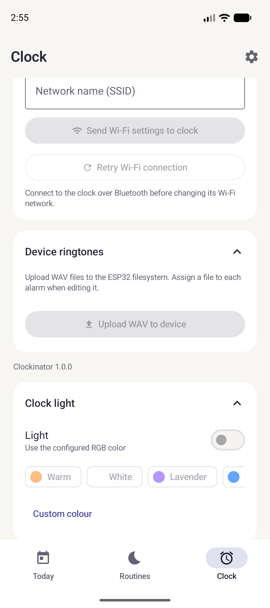

Changer de sonnerie
Préparez un WAV, envoyez-le au réveil et attribuez-le à une routine.

Préparer le fichier
Le firmware lit les WAV PCM mono ou stéréo, 8 ou 16 bits. Un WAV mono 16 bits est un bon point de départ. Dans un éditeur audio, coupez le son à la durée voulue et exportez-le en WAV PCM signé 16 bits. Avec FFmpeg :
ffmpeg -i source.mp3 -ac 1 -ar 22050 -c:a pcm_s16le reveil.wavEnvoyer et sélectionner
- Connectez le réveil dans l’app, ouvrez Clock → Device ringtones, puis Upload WAV to device.
- Choisissez le fichier et attendez qu’il apparaisse sous Files on device.
- Ouvrez Routines, éditez la routine et choisissez le fichier dans Sound & snooze. Enregistrez et synchronisez.
- Testez une alarme proche. Pour régler le volume, utilisez Clock → Clock ringtone volume.